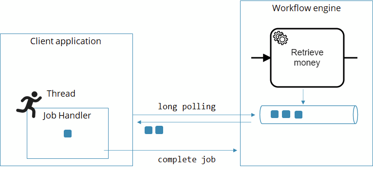
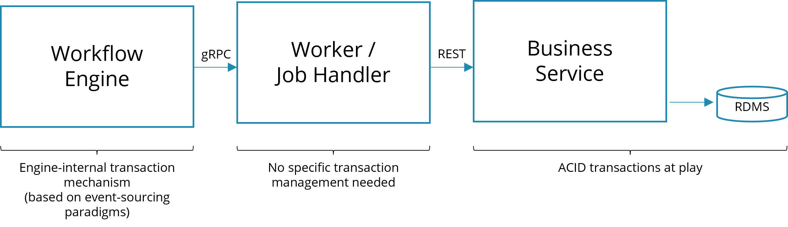
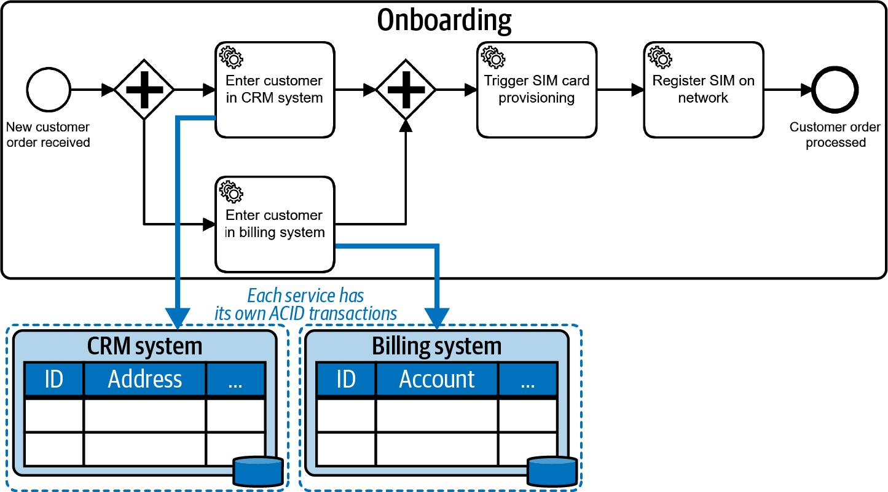
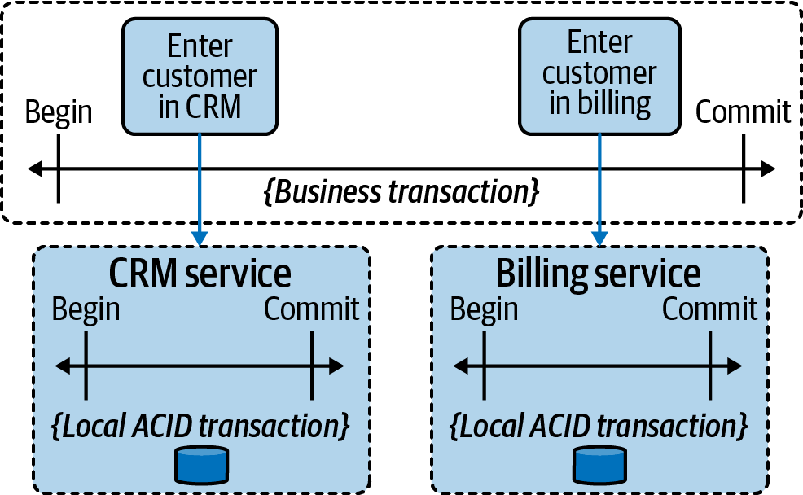

Dealing with problems and exceptions
Understanding workers
The description of workers targets Camunda 8, even if external tasks in Camunda 7 are conceptually similar. If you are looking for Camunda 7, visit understanding Camunda 7 transaction handling.
First, let's briefly examine how a worker operates.
Whenever a process instance arrives at a service task, a new job is created and pushed to an internal persistent queue within Camunda 8. A client application can subscribe to these jobs with the workflow engine by the task type name (which is comparable to a queue name).
If there is no worker subscribed when a job is created, the job is simply put in a queue. If multiple workers are subscribed, they are competing consumers, and jobs are distributed among them.

Whenever the worker has finished whatever it needs to do (like invoking the REST endpoint), it sends another call to the workflow engine, which can be one of these three:
CompleteJob: The service task went well, the process instance can move on.FailJob: The service task failed, and the workflow engine should handle this failure. There are two possibilities:remaining retries > 0: The job is retried.remaining retries <= 0: An incident is raised and the job is not retried until the incident is resolved.
ThrowError: A BPMN error is reported, which typically is handled on the BPMN level.
As the glue code in the worker is external to the workflow engine, there is no technical transaction spanning both components. Technical transactions refer to ACID (atomic, consistent, isolated, durable) properties, mostly known from relational databases.
If, for example, your application leverages those capabilities, your business logic is either successfully committed as a whole, or rolled back completely in case of any error. However, those ACID transactions cannot be applied to distributed systems (the talk lost in transaction elaborates on this). In other words, things can get out of sync if either the job handler or the workflow engine fails.
A typical example scenario is the following, where a worker calls a REST endpoint to invoke business logic:

Technical ACID transaction will only be applied in the business application. The job worker mostly needs to handle exceptions on a technical level, e.g. to control retry behavior, or pass it on to the process level, where you might need to implement business transactions.
Handling exceptions on a technical level
The description of handling exceptions targets Camunda 8. If you are looking for Camunda 7, visit our documentation on operating Camunda 7.
Leveraging retries
Using the FailJob API is pretty handy to leverage the built-in retry mechanism of Zeebe. The initial number of retries is set in the BPMN process model:
<bpmn:serviceTask id="TaskRetrieveMoney">
<bpmn:extensionElements>
<zeebe:taskDefinition retries="5" />
</bpmn:extensionElements>
</bpmn:serviceTask>
This number is typically decremented with every attempt to execute the service task. Note that you need to do that in your worker code. Example in Java:
@JobWorker(type = "retrieveMoney", autoComplete = false)
public void retrieveMoney(final JobClient client, final ActivatedJob job) {
try {
// your code
} catch (Exception ex) {
jobClient.newFailCommand(job)
.retries(job.getRetries()-1) // <1>: Decrement retries
.errorMessage("Could not retrieve money due to: " + ex.getMessage()) // <2>
.send()
.exceptionally(t -> {throw new RuntimeException("Could not fail job: " + t.getMessage(), t);});
}
}
Decrement the retries by one.
2Provide a meaningful error message, as this will be displayed to a human operator once an incident is created in Operate.
Example in Node.js:
zbc.createWorker("retrieveMoney", (job) => {
try {
// ...
} catch (e) {
job.fail("Could not retrieve money due to: " + e.message, job.retries - 1);
}
});
Using incidents
Whenever a job fails with a retry count of 0, an incident is raised. An incident requires human intervention, typically using Operate. Refer to incidents in the Operate docs.
Writing idempotent workers
Zeebe uses the at-least-once strategy for job handlers, which is a typical choice in distributed systems. This means that the process instance only advances in the happy case (the job was completed, the workflow engine received the complete job request and committed it). A typical failure case occurs when the worker who polled the job crashes and cannot complete the job anymore. In this case, the workflow engine gives the job to another worker after a configured timeout. This ensures that the job handler is executed at least once.
But this can mean that the handler is executed more than once! You need to consider this in your handler code, as the handler might be called more than one time. The technical term describing this is idempotency.
For example, typical strategies are described in 3 common pitfalls in microservice integration — and how to avoid them. One possibility is to ask the service provider if it has already seen the same request. A more common approach is to implement the service provider in a way that allows for duplicate calls. There are two ways of mastering this:
- Natural idempotency. Some methods can be executed as often as you want because they just flip some state. Example:
confirmCustomer(). - Business idempotency. Sometimes you have business identifiers that allow you to detect duplicate calls (e.g. by keeping a database of records that you can check). Example:
createCustomer(email).
If these approaches do not work, you will need to add a custom idempotency handling by using unique IDs or hashes. For example, you can generate a unique identifier and add it to the call. This way, a duplicate call can be easily spotted if you store that ID on the service provider side. If you leverage a workflow engine you probably can let it do the heavy lifting. Example: charge(transactionId, amount).
See this snippet of a process about how to support custom idempotency handling in a process model:
Whatever strategy you use, make sure that you’ve considered idempotency consciously.
Handling errors on the process level
You often encounter deviations from the "happy path" (the default scenario with a positive outcome) which shall be modeled in the process model.
Using BPMN error events
A common way to resolve these deviations is using a BPMN error event, which allows a process model to react to errors within a task. For example:
1We decide that we want to deal with an exception in the process: in case the invoice cannot be sent automatically...
2...we assign a task to a human user, who is now in charge of taking care of delivering the invoice.
Learn more about the usage of error events in the user guide.
Throwing and handling BPMN errors
In BPMN process definitions, we can explicitly model an end event as an error.
1In case the item is not available, we finish the process with an error end event.
You can mimic a BPMN error in your glue code by using the ThrowError API. The consequences for the process are the same as if it were an explicit error end event. So, in case your 'purchase' activity is not a subprocess, but a service task, it could throw a BPMN Error informing the process that the good is unavailable.
Example in Java:
jobClient.newThrowErrorCommand(job)
.errorCode("GOOD_UNAVAILABLE")
.errorMessage()
.send()
.exceptionally(t -> {throw new RuntimeException("Could not throw BPMN error: " + t.getMessage(), t);});
Thinking about unhandled BPMN exceptions
It is crucial to understand that according to the BPMN spec, a BPMN error is either handled via the process or terminates the process instance. It does not lead to an incident being raised. Therefore, you can and normally should always handle the BPMN error. You can, of course, also handle it in a parent process scope like in the example below:
1The boundary error event deals with the case that the item is unavailable.
Distinguishing between exceptions and results
As an alternative to throwing a Java exception, you can also write a problematic result into a process variable and model an XOR-Gateway later in the process flow to take a different path if that problem occurs.
From a business perspective, the underlying problem then looks less like an error and more like a result of an activity, so as a rule of thumb we deal with expected results of activities by means of gateways, but model exceptional errors, which hinder us in reaching the expected result as boundary error events.
1The task is to "check the customer's credit-worthiness", so we can reason that we expect as a result to know whether the customer is credit-worthy or not.
2We can therefore model an exclusive gateway working on that result and decide via the subsequent process flow what to do with a customer who is not credit-worthy. Here, we just consider the order to be declined.
3However, it could be that we cannot reach a result, because while we are trying to obtain knowledge about the customer's creditworthiness, we discover that the ID we have is not associated with any known real person. We can't obtain the expected result and therefore model a boundary error event. In the example, the consequence is just the same and we consider the order to be declined.
Business vs. technical errors
Note that you have two different ways of dealing with problems at your disposal now:
- Retrying. You don't want to model the retrying, as you would have to add it to each and every service task. This will bloat the visual model and confuse business personnel. Instead, either retry or fall back to incidents as described above. This is hidden in the visual.
- Branch out separate paths, as described with the error event.
In this context, we found the terms business error and technical error can be confusing, as they emphasize the source of the error too much. This can lead to long discussions about whether a certain problem is technical or not, and if you are allowed to observe technical errors in a business process model.
It's much more important to look at how you react to certain errors. Even a technical problem can qualify for a business reaction. In the above example, upon technical problems with the invoice service you can decide to manually send the invoice (business reaction) or to retry until the invoice service becomes available again (technical reaction).
Or, for example, you could decide to continue a process in the event that a scoring service is not available, and simply give every customer a good rating instead of blocking progress. The error is clearly technical, but the reaction is a business decision.
In general, we recommend talking about business reactions, which are modeled in your process, and technical reactions, which are handled generically using retries or incidents.
Embracing business transactions and eventual consistency
Technical vs business transactions
Applications using databases can often leverage ACID (atomic, consistent, isolated, durable) capabilities of that database. This means that some business logic is either successfully committed as a whole, or rolled back completely in case of any error. It is normally referred to as "transactions".
Those ACID transactions cannot be applied to distributed systems (the talk lost in transaction elaborates on this), so if you call out to multiple services from a process, you end up with separate ACID transactions at play. The following illustrations are taken from the O'Reilly book Practical Process Automation:

In the above example, the CRM system and the billing system have their local ACID transactions. The workflow engine itself also runs transactional. However, there cannot be a joined technical transaction. This requires a new way of dealing with consistency on the business level, which is referred to as business transaction:

A business transaction marks a section in a process for which 'all or nothing' semantics (similar to a technical transaction) should apply, but from a business perspective. You might encounter inconsistent states in between (for example a new customer being present in the CRM system, but not yet in the billing system).
Eventual consistency
It is important to be aware that these temporary inconsistencies are possible. You also have to understand the failure scenarios they can cause. In the above example, you could have created a marketing campaign at a moment when a customer was already in the CRM system, but not yet in billing, so they got included in that list. Then, even if their order gets rejected and they never end up as an active customer, they might still receive an upgrade advertisement.
You need to understand the effects of this happening. Furthermore, you have to think about a strategy to resolve inconsistencies. The term eventual consistency suggests that you need to take measures to get back to a consistent state eventually. In the onboarding example, this could mean you need to deactivate the customer in the CRM system if adding them to the billing system fails. This leads to the consistent state that the customer is not visible in any system anymore.
Business strategies to handle inconsistency
There are three basic strategies if a consistency problem occurs:
- Ignore it. While it sounds strange to consider ignoring a consistency issue, it actually can be a valid strategy. It’s a question of how much business impact the inconsistency may have.
- Apologize. This is an extension of the strategy to ignore. You don’t try to prevent inconsistencies, but you do make sure that you apologize when their effects come to light.
- Resolve it. Tackle the problem head-on and actively resolve the inconsistency. This could be done by different means, such as the reconciliation jobs mentioned earlier, but this practice focuses on how BPMN can help by looking into the Saga pattern.
Selecting the right strategy is a clear business decision, as none of them are right or wrong, but simply more or less well suited to the situation at hand. You should always think about the cost/value ratio.
The Saga pattern and BPMN compensation
The Saga pattern describes long-running transactions in distributed systems. The main idea is simple: when you can’t roll back tasks, you undo them. (The name Saga refers back to a paper written in the 1980s about long-lived transactions in databases.)
Camunda supports this through BPMN compensation events, which can link tasks with their undo tasks.
1Assume the customer was already added to the CRM system...
2...when an error occurred...
3...the process triggers the compensation to happen. This will roll back the business transaction.
4All compensating activities of successfully completed tasks will be executed, in this case also this one.
5As a result, the customer will be deactivated, as the API of the CRM system might not allow to simply delete it.